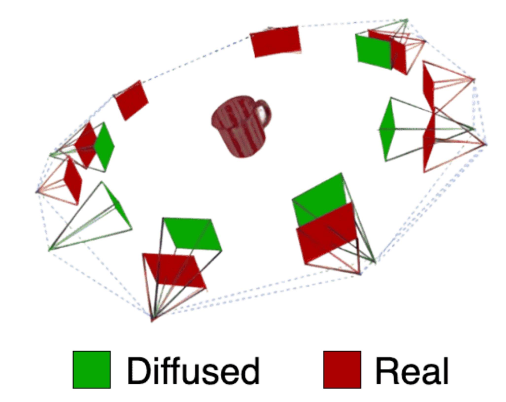
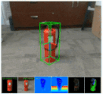
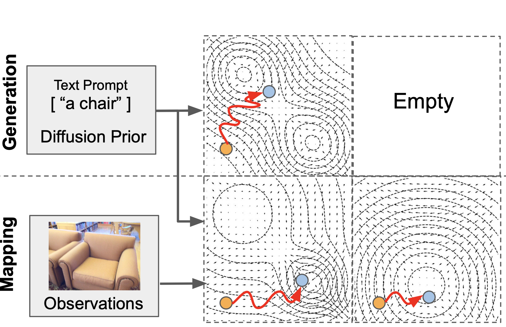
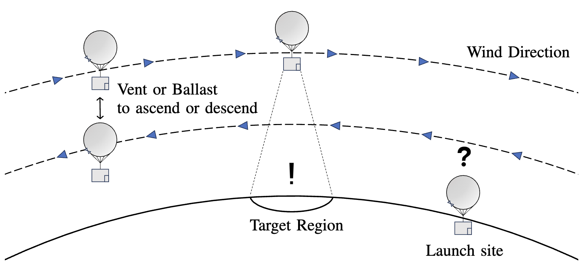
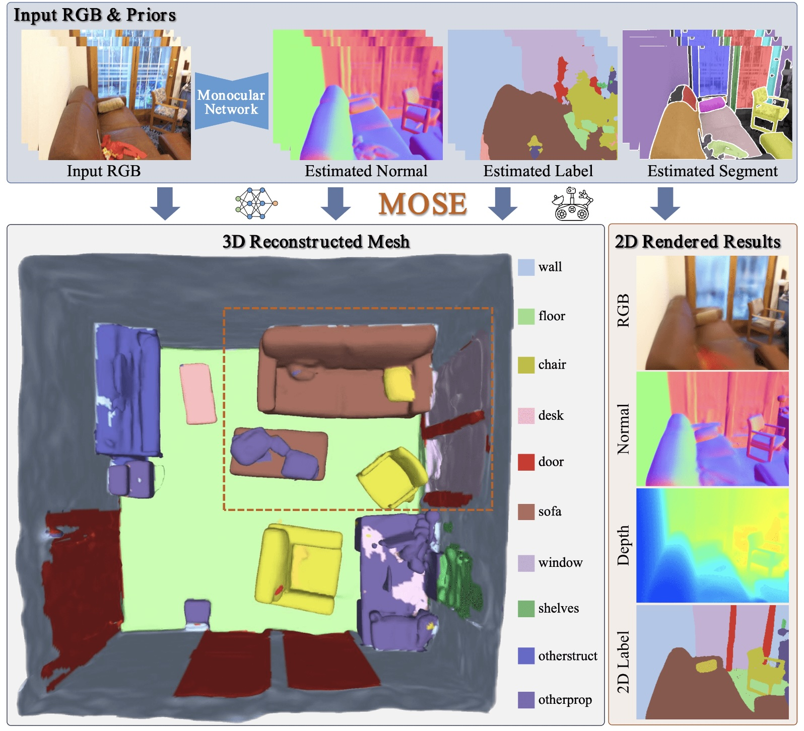
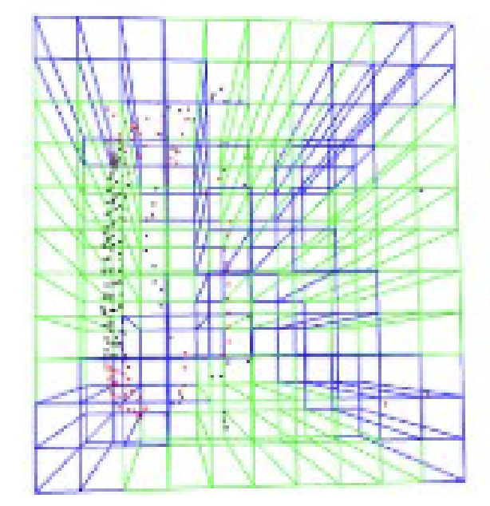
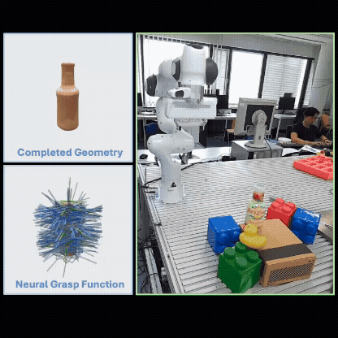
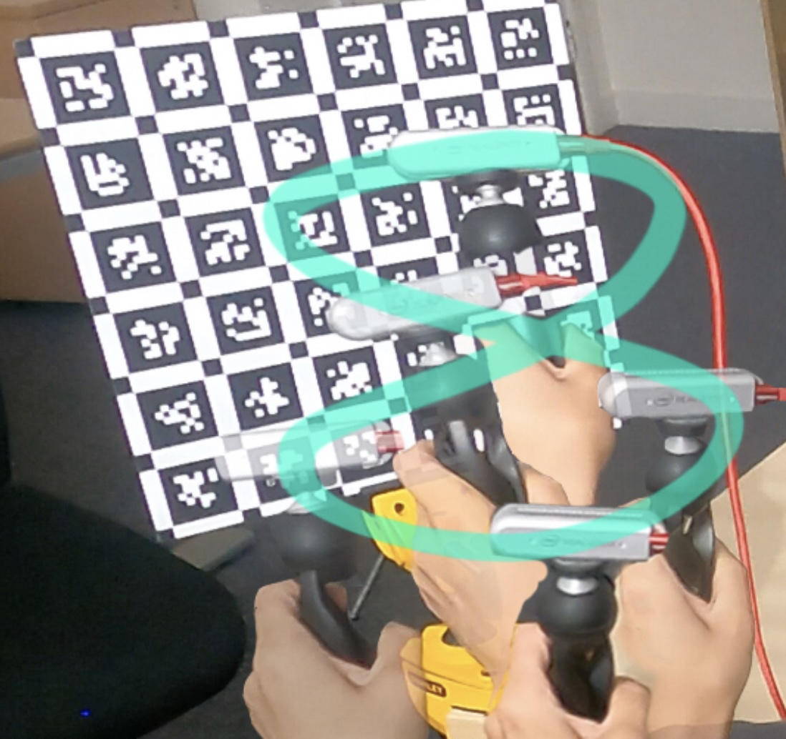
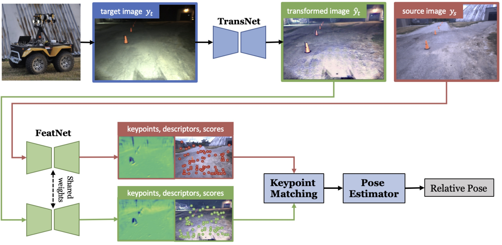
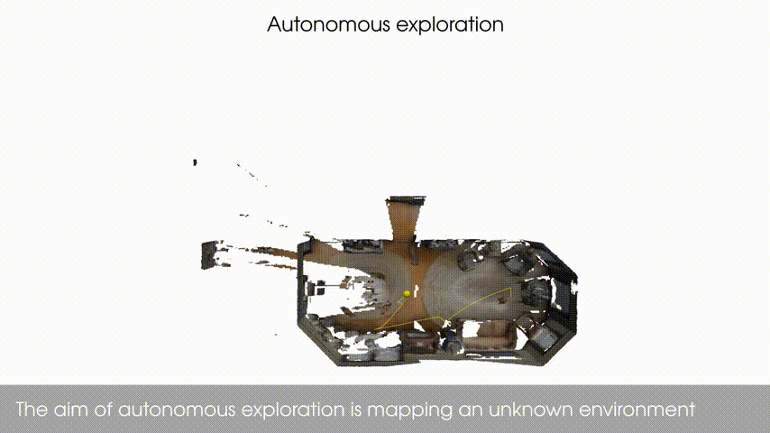

My core research interest focuses on achieveing a robust and accurate object-level SLAM system that works
in dynamic environments and can continously update and maintain its status.
Such higher level object-level perception enables robots to perform more complex tasks in a more efficient and reliable way.
My interests expand to its applications in robotics, scene understanding and spatial AI.
Please feel free to contact me if you are interested in discussing these topics with me.
Brief Bio
I am currently a staff researcher at HUAWEI Noah's Ark Lab Canada, working on Autonomous Driving and Embodied AI.
I obtained my PhD at Imperial College London (PhD thesis) in 2022, supervised by Prof.
Stefan Leutenegger and Prof. Andrew Davison.
Follwoing that, I worked as a Postdoc fellow in the Autonomous Space
Robotics Lab (ASRL) of University of Toronto with Prof.
Tim Barfoot.
I received my Master degree in Precision Engineering from
the University of Tokyo in 2017, supervised by
Prof. Atsushi Yamashita and Prof.
Hajime Asama. I got my Bachelor's degree in Information Engineering from South China
University of Technology in 2014.
SELECTED PUBLICATIONS
|  |
UnPose: Uncertainty-Guided Diffusion Priors for Zero-Shot Pose Estimation
Zhaodong Jiang, Ashish Sinha, Tongtong Cao, Yuan Ren, Bingbing Liu, Binbin Xu Conference on Robot Learning (CoRL), 2025 project / OpenReview / |
|  |
Hippo: Harnessing image-to-3d priors for model-free zero-shot 6d pose estimation
Yibo Liu, Zhaodong Jiang, Binbin Xu, Guile Wu, Yuan Ren, Tongtong Cao, Bingbing Liu, Rui Heng Yang, Amir Rasouli, Jinjun Shan IEEE Robotics and Automation Letters, 2025 (ICRA 2026 presentation) project / paper / arXiv |
|  |
Toward General Object-level Mapping from Sparse Views with 3D Diffusion Priors
Ziwei Liao , Binbin Xu, Steven L. Waslander Conference on Robot Learning (CoRL), 2024 arXiv / OpenReview / code |
|  |
Identifying Optimal Launch Sites of High-Altitude Latex-Balloons using Bayesian Optimisation for the Task of Station-Keeping
Jack Saunders, Sajad Saeedi, Adam Hartshorne, Binbin Xu, Özgur Şimşek, Alan Hunter, Wenbin Li IEEE/RSJ International Conference on Intelligent Robots and Systems (IROS), 2024 project / paper / arXiv / video / |
|  |
MOSE: Monocular Semantic Reconstruction Using NeRF-Lifted Noisy Priors
Zhenhua Du, Binbin Xu, Haoyu Zhang, Kai Huo, Shuaifeng Zhi IEEE Robotics and Automation Letters, 2024 paper / arXiv / code |
 |
NeRF-VO: Real-Time Sparse Visual Odometry with Neural Radiance Fields
Jens Naumann, Binbin Xu, Stefan Leutenegger, Xingxing Zuo IEEE Robotics and Automation Letters, 2024 project / paper / arXiv / video / code |
|  |
Adversarial 3D Virtual Patches using Integrated Gradients
Chengzeng You, Zhongyuan Hau, Binbin Xu, Soteris Demetriou, IEEE/ACM Workshop on the Internet of Safe Things, co-located with IEEE Symposium on Security and Privacy (S&P) , 2024 Best Paper Award paper / arXiv |
|  |
FuncGrasp: Learning Object-Centric Neural Grasp Functions from
Single
Annotated Example Object
Hanzhi Chen, Binbin Xu, Stefan Leutenegger IEEE International Conference on Robotics and Automation (ICRA), 2024 project / paper / arXiv / video |
 |
Incremental Dense Reconstruction from Monocular Video with
Guided
Sparse Feature Volume Fusion
Xingxing Zuo, Nan Yang, Nathaniel Merrill, Binbin Xu, Stefan Leutenegger IEEE Robotics and Automation Letters, 2023 paper / arXiv / video |
|  |
Accurate and Interactive Visual-Inertial Sensor Calibration
with
Next-Best-View and Next-Best-Trajectory Suggestion
Christopher L Choi, Binbin Xu, Stefan Leutenegger IEEE/RSJ International Conference on Intelligent Robots and Systems (IROS), 2023 project / paper / arXiv / video / code |
|  |
What to learn: Features, image transformations, or both?
Yuxuan Chen, Binbin Xu, Frederike Dümbgen, Timothy D Barfoot IEEE/RSJ International Conference on Intelligent Robots and Systems (IROS), 2023 paper / arXiv / video |
|  |
Finding Things in the Unknown: Semantic
Object-Centric
Exploration
with an MAV
Sotiris Papatheodorou, Nils Funk, Dimos Tzoumanikas, Christopher Choi, Binbin Xu, Stefan Leutenegger IEEE International Conference on Robotics and Automation (ICRA), 2023 project / paper / arXiv / video / code |

|
Learning to Complete Object Shapes for
Object-level
Mapping in
Dynamic Scenes
Binbin Xu, Andrew J. Davison, Stefan Leutenegger IEEE/RSJ International Conference on Intelligent Robots and Systems (IROS), 2022 project / paper / arXiv / video |
 |
Visual-Inertial Multi-Instance Dynamic SLAM with
Object-level
Relocalisation
Yifei Ren*, Binbin Xu*, Christopher L Choi, Stefan Leutenegger IEEE/RSJ International Conference on Intelligent Robots and Systems (IROS), 2022 project / paper / arXiv / video / code |

|
Deep Probabilistic Feature-metric
Tracking
Binbin Xu, Andrew J. Davison, Stefan Leutenegger IEEE Robotics and Automation Letters (RA-L), Vol. 6, No. 1, pp. 223-230, 2021 (ICRA 2021 presentation) Honorable Mention of RA-L 2021 Best Paper Award paper / arXiv / video / code |

|
MID-Fusion: Octree-based Object-Level
Multi-Instance
Dynamic
SLAM
Binbin Xu, Wenbin Li, Dimos Tzoumanikas, Michael Bloesch, Andrew Davison, Stefan Leutenegger IEEE International Conference on Robotics and Automation (ICRA), 2019 paper / arXiv / video / rgb-jacobian / data / code |
 |
Spatio-temporal Video Completion in Spherical
Image
Sequences
Binbin Xu, Sarthak Pathak, Hiromitsu Fujii, Atsushi Yamashita and Hajime Asama IEEE Robotics and Automation Letters (RA-L), Vol. 2, No. 4, pp. 2032-2039, 2017 paper / video |
HONORS
- Best
Paper
Honorable
Mention Award,
IEEE Robotics and Automation Letters, 2021 - Outstanding Master Thesis,
Department of Precision Engineering, The University of Tokyo, 2017 - JSME
Fellow Award
for Outstanding Young Engineers,
The Japan Society of Mechanical Engineers (JSME), 2016 - Best Paper Honorable
Mention
Award,
2015 JSME/RMD International Conference on Advanced Mechatronics, 2015
Miscellaneous
- Having spent wonderful years living in China, Japan, UK, and Canada, I am interested in exploring different cultures and talking with people from different backgrounds. I am fluent in Mandarin, English and Japanese.
- Associate Editors: ICRA (2024, 2025, 2026), IROS (2023, 2024, 2025)
- Reviewer Service: ICRA, IROS, CoRL, BMVC, TRO, RAL, JFR, TVCG, ...
- Outside of my research, I love travelling, hiking, climbing, SCUBA diving, and swimming.